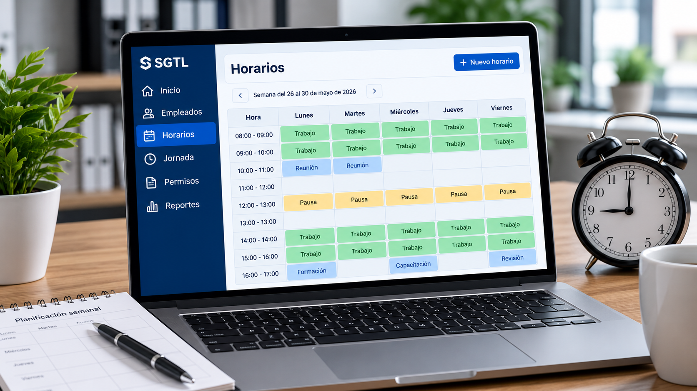
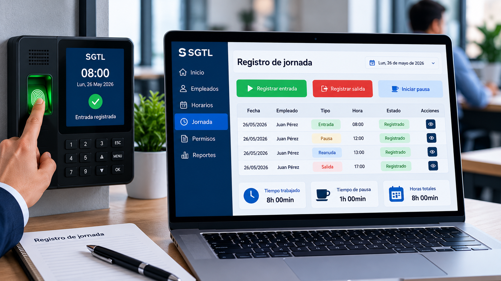
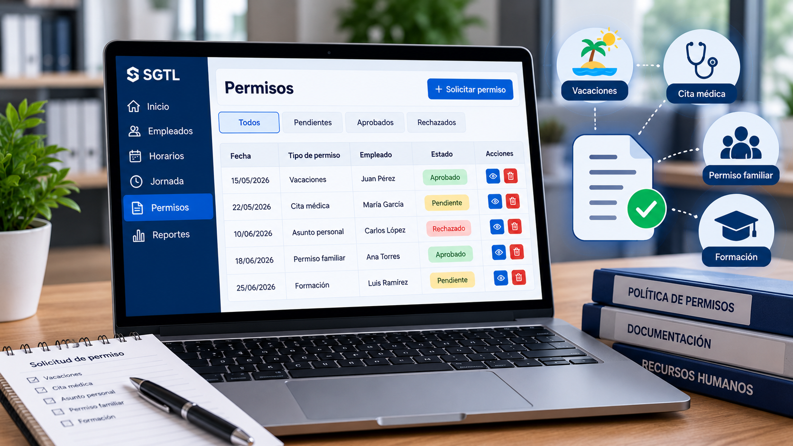
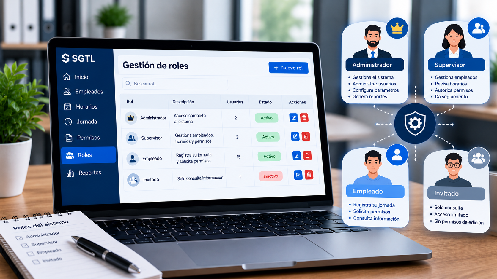

¿Qué es el SGTL?
El Sistema de Gestión de Tiempo Laboral (SGTL) es una aplicación orientada a pequeñas y medianas empresas que permite organizar y gestionar diferentes aspectos relacionados con el tiempo de trabajo de sus empleados.
El sistema busca facilitar la administración de horarios, registros de jornada, permisos y usuarios, proporcionando una herramienta sencilla y accesible para la gestión laboral.
Contenido del tutorial
1. Gestión de usuarios y empleados
El SGTL permite gestionar la información de los usuarios y empleados que forman parte de la organización. Cada usuario puede disponer de información relacionada con su identificación y sus funciones dentro del sistema.
Esta funcionalidad permite mantener organizada la información de los trabajadores y facilitar el acceso a las diferentes funciones de la aplicación.
2. Gestión de horarios

La gestión de horarios permite organizar las jornadas laborales de los empleados. El sistema puede utilizar esta información para establecer los horarios de trabajo y facilitar su consulta.
Una correcta organización de los horarios ayuda a las empresas a distribuir las jornadas laborales y mejorar la planificación del equipo de trabajo.
3. Registro de la jornada laboral

El registro de la jornada laboral permite controlar información relacionada con la entrada y salida de los empleados y las horas trabajadas.
Esta información puede utilizarse para consultar el tiempo trabajado y facilitar el seguimiento de la jornada laboral de cada empleado.
4. Gestión de permisos

El SGTL puede incorporar una sección destinada a la gestión de permisos de los empleados. En ella se pueden registrar las solicitudes y consultar su estado.
De esta manera se facilita la organización y el seguimiento de las solicitudes realizadas por los trabajadores.
5. Roles del sistema

Los roles permiten establecer diferentes niveles de acceso dentro del SGTL. De esta forma, cada usuario puede acceder a las funciones que corresponden a sus responsabilidades.
- Administrador: administra el sistema y sus usuarios.
- Supervisor: realiza funciones de supervisión y seguimiento.
- Empleado: consulta y registra información relacionada con su jornada.